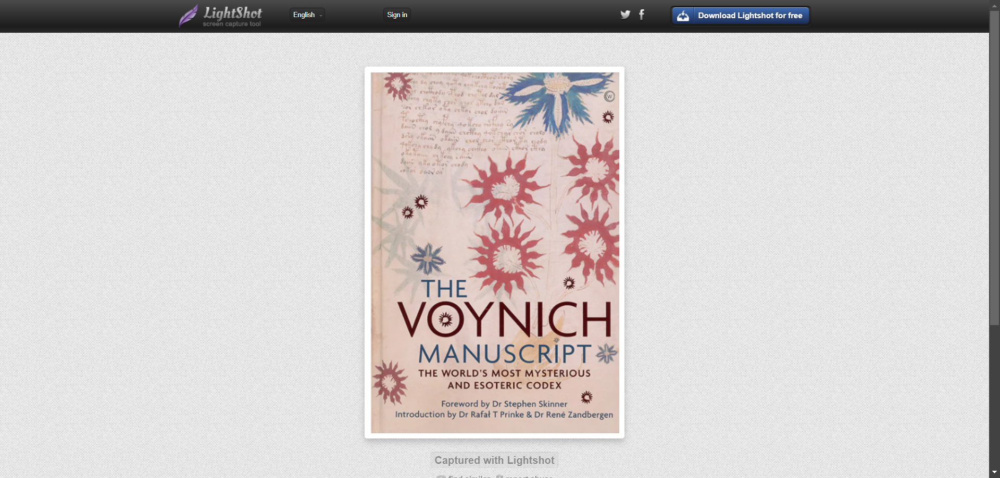

A surreal work full of imagination crafted by an author unknown.
Voynich manuscript: a book where you see fascinating creatures and illustrations of bizzare things.
Which is yet to be deciphered.
An author's mind is connected to their work.
Which, in this case seems like the author must be an enigmatic person.
Because his work is an engima, fascinating and unknown.

Good day to all who read this, thank you for your precious time .
dive more into the world of Voynich manuscript and you'll be amazed.